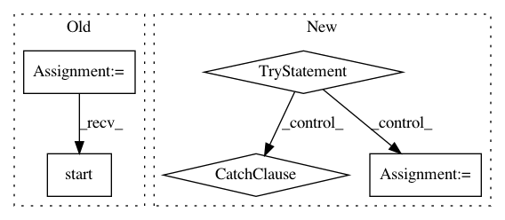

f11bb1ef1321e9525fd92de72b2e8a78af24cf17,hyperdash/hyper_dash.py,HyperDash,run_http,#HyperDash#,151
Before Change
code_thread = Thread(target=self.code_runner.run)
network_thread = Thread(target=network_loop)
event_loop_thread = Thread(target=event_loop)
event_loop_thread.start()
network_thread.start()
code_thread.start()
After Change
// Event loop
while True:
try:
self.capture_io()
exited_cleanly, is_done = self.code_runner.is_done()
if is_done:
self.programmatic_exit = True
if exited_cleanly:
self.cleanup_http("success")
else:
self.cleanup_http("failure")
return
time.sleep(1)
except (KeyboardInterrupt, SystemExit):
// TODO: Set low timeout here
self.server_manager_instance.send_message(
create_run_ended_message(self.current_sdk_run_uuid, "user_canceled"),
raise_exceptions=False
)
import sys
sys.exit(0)
except Exception as e:
self.print_out(e)
self.print_err(e)
self.cleanup_http("failure")
raise
def run_wamp(self):
def user_thread():
// Twisted callInThread API does not support the daemon flag, so we
In pattern: SUPERPATTERN
Frequency: 3
Non-data size: 5
Instances
Project Name: hyperdashio/hyperdash-sdk-py
Commit Name: f11bb1ef1321e9525fd92de72b2e8a78af24cf17
Time: 2017-07-16
Author: richardartoul@gmail.com
File Name: hyperdash/hyper_dash.py
Class Name: HyperDash
Method Name: run_http
Project Name: home-assistant/home-assistant
Commit Name: 59524c7933c84680c5fb1b164814cd9b363d5727
Time: 2015-12-05
Author: marhje52@kth.se
File Name: homeassistant/components/mysensors.py
Class Name:
Method Name: setup
Project Name: akkana/scripts
Commit Name: e1e3f45530006843db21dc084f2dde2725056168
Time: 2018-06-24
Author: akkana@shallowsky.com
File Name: quickbrowse.py
Class Name:
Method Name: